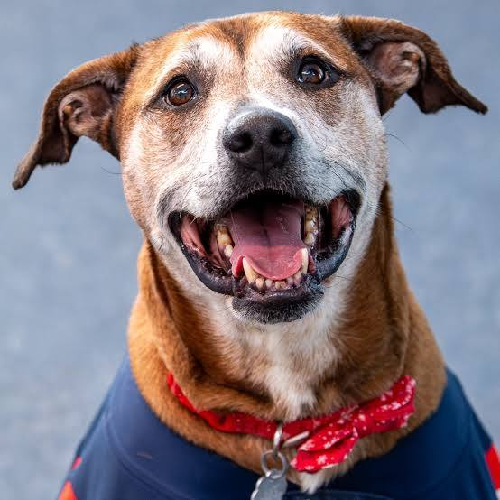
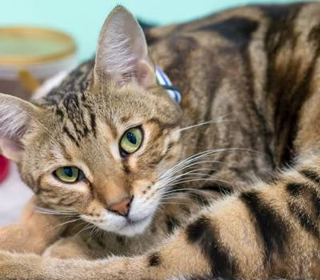

Meet Jerry, a charming and friendly dog with a heart of gold who is looking for a loving home to call his own. He is a medium-sized mixed breed with soft, fluffy fur and soulful brown eyes that will melt your heart the moment you meet him. Whether you are looking for a jogging companion or someone to take long walks with, Jerry is your guy—he loves to stay active but is equally happy curling up for a nap at your feet. Adopting Jerry means gaining a loyal, devoted friend who will bring endless joy and wagging tails into your life.

Tom is a handsome and affectionate cat who is ready to bring warmth and companionship to his new forever home. A true "gentleman," he is known for his calm and easygoing nature, often following his favorite humans around the house just to be near the action. Tom is a total sweetheart who loves to settle into a cozy lap for hours of purring and chin tickles. If you are looking for a gentle, low-maintenance companion who will be your most loyal friend, Tom is the perfect feline match for you.